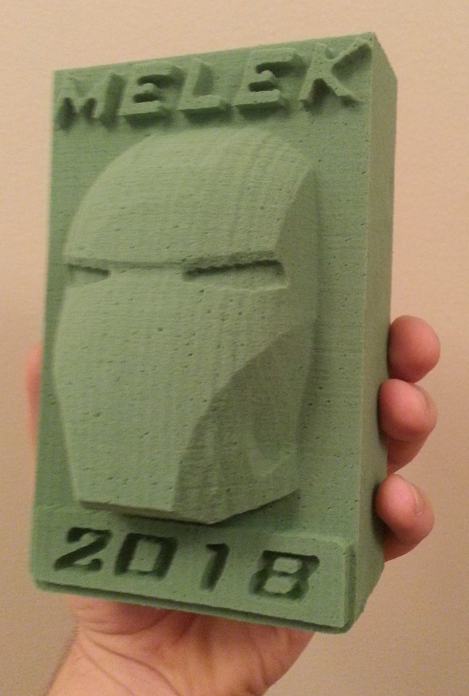
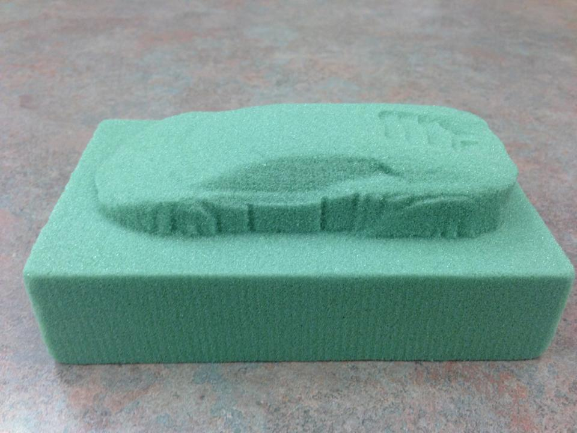
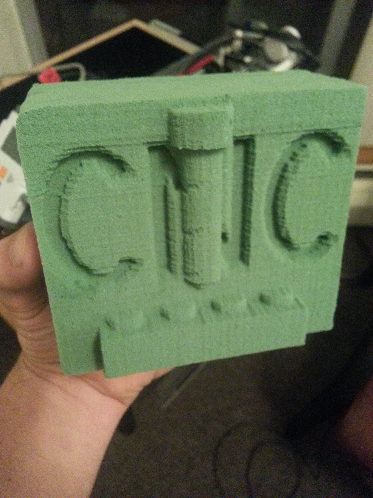

A first year final project by Alex Rodrigues and Michael Skupien
This CNC was built on the Lego Mindstorms NXT system. The software is a two part set up with a client written in C and a server written in Python. The two component communicate over Bluetooth.
A great deal of detail was paid to the control algorithms achieving accuracy of ±0.005". Here are some of its creations:
  
A video of it in action: